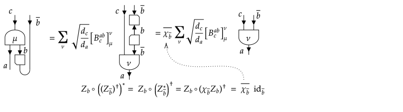

Fusion trees
The gain in efficiency (both in memory occupation and computation time) obtained from using symmetric (equivariant) tensor maps is that, by Schur's lemma, they are block diagonal in the basis of coupled sectors, i.e. they exhibit block sparsity. To exploit this block diagonal form, it is however essential that we know the basis transformation from the individual (uncoupled) sectors appearing in the tensor product form of the domain and codomain, to the totally coupled sectors that label the different blocks. We refer to the latter as block sectors, as we already encountered in the previous section blocksectors and blockdim defined on the type ProductSpace.
This basis transformation consists of a basis of inclusion and projection maps, denoted as $X^{a_1a_2…a_N}_{c,α}: R_c → R_{a_1} ⊗ R_{a_2} ⊗ … ⊗ R_{a_N}$ and their adjoints $(X^{a_1a_2…a_N}_{c,α})^†$, such that
\[(X^{a_1a_2…a_N}_{c,α})^† ∘ X^{a_1a_2…a_N}_{c′,α′} = δ_{c,c′} δ_{α,α′} \mathrm{id}_c\]
and
\[∑_{c,α} X^{a_1a_2…a_N}_{c,α} ∘ (X^{a_1a_2…a_N}_{c,α})^† = \mathrm{id}_{a_1 ⊗ a_2 ⊗ … ⊗ a_N} = \mathrm{id}_{a_1} ⊗ \mathrm{id}_{a_2} ⊗ … ⊗ \mathrm{id}_{a_N}\]
Fusion trees provide a particular way to construct such a basis. It is useful to know about the existence of fusion trees and how they are represented, as discussed in the first subsection. The next two subsections discuss possible manipulations that can be performed with fusion trees. These are used under the hood when manipulating the indices of tensors, but a typical user would not need to use these manipulations on fusion trees directly. Hence, these last two sections can safely be skipped.
Canonical representation
To couple or fuse the different sectors together into a single block sector, we can sequentially fuse together two sectors into a single coupled sector, which is then fused with the next uncoupled sector, using the splitting tensors $X_{a,b}^{c,μ} : R_c → R_a ⊗ R_b$ and their adjoints. This amounts to the canonical choice of our tensor product, and for a given tensor mapping from $(((W_1 ⊗ W_2) ⊗ W_3) ⊗ … )⊗ W_{N_2})$ to $(((V_1 ⊗ V_2) ⊗ V_3) ⊗ … )⊗ V_{N_1})$, the corresponding fusion and splitting trees take the form

for the specific case $N_1 = 4$ and $N_2 = 3$. We can separate this tree into the fusing part $(b_1 ⊗ b_2) ⊗ b_3 → c$ and the splitting part $c→(((a_1 ⊗ a_2) ⊗ a_3) ⊗ a_4)$. Given that the fusion tree can be considered to be the adjoint of a corresponding splitting tree $c → (b_1 ⊗ b_2) ⊗ b_3$, we now first consider splitting trees in isolation. A splitting tree which goes from one coupled sector $c$ to $N$ uncoupled sectors $a_1$, $a_2$, …, $a_N$ needs $N-2$ additional internal sector labels $e_1$, …, $e_{N-2}$, and, if FusionStyle(I) isa GenericFusion, $N-1$ additional multiplicity labels $μ_1$, …, $μ_{N-1}$. We henceforth refer to them as vertex labels, as they are associated with the vertices of the splitting tree. In the case of FusionStyle(I) isa UniqueFusion, the internal sectors $e_1$, …, $e_{N-2}$ are completely fixed, for FusionStyle(I) isa MultipleFusion they can also take different values. In our abstract notation of the splitting basis $X^{a_1a_2…a_N}_{c,α}$ used above, $α$ can be considered a collective label, i.e. $α = (e_1, …, e_{N-2}; μ₁, … ,μ_{N-1})$. Indeed, we can check the orthogonality condition $(X^{a_1a_2…a_N}_{c,α})^† ∘ X^{a_1a_2…a_N}_{c′,α′} = δ_{c,c′} δ_{α,α′} \mathrm{id}_c$, which now forces all internal lines $e_k$ and vertex labels $μ_l$ to be the same.
There is one subtle remark that we have so far ignored. Within the specific subtypes of Sector, we do not explicitly distinguish between $R_a^*$ (simply denoted as $a^*$ and graphically depicted as an upgoing arrow $a$) and $R_{\bar{a}}$ (simply denoted as $\bar{a}$ and depicted with a downgoing arrow), i.e. between the dual space of $R_a$ on which the conjugated irrep acts, or the irrep $\bar{a}$ to which the complex conjugate of irrep $a$ is isomorphic. This distinction is however important, when certain uncoupled sectors in the fusion tree actually originate from a dual space. We use the isomorphisms $Z_a : R_a^* → R_{\bar{a}}$ and its adjoint $Z_a^† : R_{\bar{a}} → R_a^*$, as introduced in the section on topological data of a fusion category, to build fusion and splitting trees that take the distinction between irreps and their conjugates into account. Hence, in the previous example, if e.g. the first and third space in the codomain and the second space in the domain of the tensor were dual spaces, the actual pair of splitting and fusion tree would look as

The presence of these isomorphisms will be important when we start to bend lines, to move uncoupled sectors from the incoming to the outgoing part of the fusion-splitting tree. Note that we can still represent the fusion tree as the adjoint of a corresponding splitting tree, because we also use the adjoint of the $Z$ isomorphisms in the splitting part, and the $Z$ isomorphism in the fusion part. Furthermore, the presence of the $Z$ isomorphisms does not affect the orthonormality.
We represent splitting trees and their adjoints using a specific immutable type called FusionTree (which actually represents a splitting tree, but fusion tree is a more common term), defined as
struct FusionTree{I<:Sector,N,M,L}
uncoupled::NTuple{N,I}
coupled::I
isdual::NTuple{N,Bool}
innerlines::NTuple{M,I} # fixed to M = N-2
vertices::NTuple{L,Int} # fixed to L = N-1
endHere, the fields are probably self-explanatory. The isdual field indicates whether an isomorphism is present (if the corresponding value is true) or not. Note that the field uncoupled contains the sectors coming out of the splitting trees, before the possible $Z$ isomorphism, i.e. the splitting tree in the above example would have sectors = (a₁, a₂, a₃, a₄). The FusionTree type has a number of basic properties and capabilities, such as checking for equality with == and support for hash(f::FusionTree, h::UInt), as splitting and fusion trees are used as keys in look-up tables (i.e. AbstractDictionary instances) to look up certain parts of the data of a tensor.
FusionTree instances are not checked for consistency (i.e. valid fusion rules etc) upon creation, hence, they are assumed to be created correctly. The most natural way to create them is by using the fusiontrees(uncoupled::NTuple{N, I}, coupled::I = unit(I)) method, which returns an iterator over all possible fusion trees from a set of N uncoupled sectors to a given coupled sector, which by default is assumed to be the trivial sector of that group or fusion category (i.e. the identity object in categorical nomenclature). The return type of fusiontrees is a custom type FusionTreeIterator which conforms to the complete interface of an iterator, and has a custom length function that computes the number of possible fusion trees without iterating over all of them explicitly. This is best illustrated with some examples
julia> s = Irrep[SU₂](1/2)Irrep[SU₂](1/2)julia> collect(fusiontrees((s, s, s, s)))2-element Vector{FusionTree{SU2Irrep, 4, 2, 3}}: FusionTree{Irrep[SU₂]}((1/2, 1/2, 1/2, 1/2), 0, (false, false, false, false), (0, 1/2)) FusionTree{Irrep[SU₂]}((1/2, 1/2, 1/2, 1/2), 0, (false, false, false, false), (1, 1/2))julia> collect(fusiontrees((s, s, s, s, s), s, (true, false, false, true, false)))5-element Vector{FusionTree{SU2Irrep, 5, 3, 4}}: FusionTree{Irrep[SU₂]}((1/2, 1/2, 1/2, 1/2, 1/2), 1/2, (true, false, false, true, false), (0, 1/2, 0)) FusionTree{Irrep[SU₂]}((1/2, 1/2, 1/2, 1/2, 1/2), 1/2, (true, false, false, true, false), (1, 1/2, 0)) FusionTree{Irrep[SU₂]}((1/2, 1/2, 1/2, 1/2, 1/2), 1/2, (true, false, false, true, false), (0, 1/2, 1)) FusionTree{Irrep[SU₂]}((1/2, 1/2, 1/2, 1/2, 1/2), 1/2, (true, false, false, true, false), (1, 1/2, 1)) FusionTree{Irrep[SU₂]}((1/2, 1/2, 1/2, 1/2, 1/2), 1/2, (true, false, false, true, false), (1, 3/2, 1))julia> iter = fusiontrees(ntuple(n -> s, 16))TensorKit.FusionTreeIterator{SU2Irrep, 16, NTuple{16, Tuple{SU2Irrep}}}(((Irrep[SU₂](1/2),), (Irrep[SU₂](1/2),), (Irrep[SU₂](1/2),), (Irrep[SU₂](1/2),), (Irrep[SU₂](1/2),), (Irrep[SU₂](1/2),), (Irrep[SU₂](1/2),), (Irrep[SU₂](1/2),), (Irrep[SU₂](1/2),), (Irrep[SU₂](1/2),), (Irrep[SU₂](1/2),), (Irrep[SU₂](1/2),), (Irrep[SU₂](1/2),), (Irrep[SU₂](1/2),), (Irrep[SU₂](1/2),), (Irrep[SU₂](1/2),)), Irrep[SU₂](0), (false, false, false, false, false, false, false, false, false, false, false, false, false, false, false, false))julia> sum(n -> 1, iter)1430julia> length(iter)1430julia> @elapsed sum(n -> 1, iter)0.046137193julia> @elapsed length(iter)3.8331e-5julia> s2 = s ⊠ sIrrep[SU₂ × SU₂](1/2, 1/2)julia> collect(fusiontrees((s2, s2, s2, s2)))4-element Vector{FusionTree{ProductSector{Tuple{SU2Irrep, SU2Irrep}}, 4, 2, 3}}: FusionTree{Irrep[SU₂ × SU₂]}(((1/2, 1/2), (1/2, 1/2), (1/2, 1/2), (1/2, 1/2)), (0, 0), (false, false, false, false), ((0, 0), (1/2, 1/2))) FusionTree{Irrep[SU₂ × SU₂]}(((1/2, 1/2), (1/2, 1/2), (1/2, 1/2), (1/2, 1/2)), (0, 0), (false, false, false, false), ((1, 0), (1/2, 1/2))) FusionTree{Irrep[SU₂ × SU₂]}(((1/2, 1/2), (1/2, 1/2), (1/2, 1/2), (1/2, 1/2)), (0, 0), (false, false, false, false), ((0, 1), (1/2, 1/2))) FusionTree{Irrep[SU₂ × SU₂]}(((1/2, 1/2), (1/2, 1/2), (1/2, 1/2), (1/2, 1/2)), (0, 0), (false, false, false, false), ((1, 1), (1/2, 1/2)))
Note that FusionTree instances are shown (printed) in a way that is valid code to reproduce them, a property which also holds for both instances of Sector and instances of VectorSpace. All of those should be displayed in a way that can be copy pasted as valid code. Furthermore, we use context to determine how to print e.g. a sector. In isolation, s2 is printed as (Irrep[SU₂](1/2) ⊠ Irrep[SU₂](1/2)), however, within the fusion tree, it is simply printed as (1/2, 1/2), because it will be converted back into a ProductSector, namely Irrep[SU₂] ⊠ Irrep[SU₂] by the constructor of FusionTree{Irrep[SU₂] ⊠ Irrep[SU₂]}.
Manipulations on a fusion tree
We now discuss elementary manipulations that we want to perform on or between fusion trees (where we actually mean splitting trees), which will form the building block for more general manipulations on a pair of a fusion and splitting tree discussed in the next subsection, and then for casting a general index manipulation of a tensor map as a linear operation in the basis of canonically ordered splitting and fusion trees. In this section, we will ignore the $Z$ isomorphisms, as they are just trivially reshuffled under the different operations that we describe. These manipulations are used as low-level methods by the TensorMap methods discussed on the next page. As such, they are not exported by TensorKit.jl, nor do they overload similarly named methods from Julia Base (see split and merge below).
The first operation we discuss is an elementary braid of two neighbouring sectors (indices), i.e. a so-called Artin braid or Artin generator of the braid group. Because these two sectors do not appear on the same fusion vertex, some recoupling is necessary. The following represents two different ways to compute the result of such a braid as a linear combination of new fusion trees in canonical order:

While the upper path is the most intuitive, it requires two recouplings or F-moves (one forward and one reverse). On the other hand, the lower path requires only one (reverse) F- move, and two R-moves. The latter are less expensive to compute, and so the lower path is computationally more efficient. However, the end result should be the same, provided the pentagon and hexagon equations are satisfied. We always assume that these are satisfied for any new subtype of Sector, and it is up to the user to verify that they are when implementing new custom Sector types. This result is implemented in the function artin_braid(f::FusionTree, i; inv = false) where i denotes the position of the first sector (i.e. labeled b in the above graph) which is then braided with the sector at position i+1 in the fusion tree f. The keyword argument inv allows to select the inverse braiding operation, which amounts to replacing the R-matrix with its inverse (or thus, adjoint) in the above steps. The result is returned as a dictionary with possible output fusion trees as keys and corresponding coefficients as value. In the case of FusionStyle(I) isa UniqueFusion, their is only one resulting fusion tree, with corresponding coefficient a complex phase (which is one for the bosonic representation theory of an Abelian group), and the result is a special SingletonDict<:AbstractDict, a struct type defined in TensorKit.jl to hold a single key value pair.
With the elementary artin_braid, we can then compute a more general braid. For this, we provide an interface
braid(f::FusionTree{I, N}, levels::NTuple{N, Int}, permutation::NTuple{N, Int})
where the braid is specified as a permutation, such that the new sector at position i was originally at position permutation[i], and where every uncoupled sector is also assigned a level or depth. The permutation is decomposed into swaps between neighbouring sectors, and when two sectors are swapped, their respective level will determine whether the left sector is braided over or under its right neighbor. This interface does not allow to specify the most general braid, and in particular will never wind one line around another, but can be used as a more general building block for arbitrary braids than the elementary Artin generators. A graphical example makes this probably more clear, i.e for levels = (1, 2, 3, 4, 5) and permutation = (5, 3, 1, 4, 2), the corresponding braid is given by

that is, the first sector or space goes to position 3, and crosses over all other lines, because it has the lowest level (i.e. think of level as depth in the third dimension), and so forth. We sketch this operation both as a general braid on the left hand side, and as a particular composition of Artin braids on the right hand side.
When BraidingStyle(I) == SymmetricBraiding(), there is no distinction between applying the braiding or its inverse (i.e. lines crossing over or under each other in the graphical notation) and the whole operation simplifies down to a permutation. We then also support the interface
permute(f::FusionTree{I, N}, permutation::NTuple{N, Int})
Other manipulations which are sometimes needed are
insertat(f1::FusionTree{I,N₁}, i::Int, f2::FusionTree{I,N₂}): inserts a fusion treef2at theith uncoupled sector of fusion treef1(this requires that the coupled sectorf2matches with theith uncoupled sector off1, and that!f1.isdual[i], i.e. that there is no $Z$-isomorphism on theith line off1), and recouple this into a linear combination of trees in canonical order, withN₁ + N₂ - 1uncoupled sectors, i.e. diagrammatically fori = 3

split(f::FusionTree{I,N}, M::Int): splits a fusion treefinto two treesf1andf2, such thatf1has the firstMuncoupled sectors off, andf2the remainingN - M. This function is type stable ifMis a compile time constant.split(f, M)is the inverse ofinsertatin the sense thatinsertat(f2, 1, f1)should return a dictionary with a single key-value pairf=>1. Diagrammatically, forM = 4, the functionsplitreturns

merge(f1::FusionTree{I,N₁}, f2::FusionTree{I,N₂}, c::I, [μ=1]): merges two fusion treesf1andf2by fusing the coupled sectors off1andf2into a sectorc(with vertex labelμifFusionStyle(I) == GenericFusion()), and reexpressing the result as a linear combination of fusion trees withN₁ + N₂uncoupled sectors in canonical order. This is a simple application ofinsertat. Diagrammatically, this operation is represented as:

Manipulations on a splitting - fusion tree pair
In this subsection we discuss manipulations that act on a splitting and fusion tree pair, which we will always as two separate trees f1, f2, where f1 is the splitting tree and f2 represents the fusion tree, and they should have f1.coupled == f2.coupled.
The most important manipulation on such a pair is to move sectors from one to the other. Given the canonical order of these trees, we exclusively use the left duality (see the section on categories), for which the evaluation and coevaluation maps establish isomorphisms between
\[\begin{aligned} &\mathrm{Hom}((((b_1 ⊗ b_2) ⊗ …) ⊗ b_{N_2}), (((a_1 ⊗ a_2) ⊗ …) ⊗ a_{N_1}))\\ &≂\mathrm{Hom}((((b_1 ⊗ b_2) ⊗ ...) ⊗ b_{N_2-1}), ((((a_1 ⊗ a_2) ⊗ ...) ⊗ a_{N_1}) ⊗ b_{N_2}^*))\\ &≂\mathrm{Hom}(1, (((((((a_1 ⊗ a_2) ⊗ ...) ⊗ a_{N_1}) ⊗ b_{N_2}^*) ⊗ …) ⊗ b_2^*) ⊗ b_1^*) ) \end{aligned}\]
where the last morphism space is then labeled by the basis of only splitting trees. We can then use the manipulations from the previous section, and then again use the left duality to bring this back to a pair of splitting and fusion tree with N₂′ incoming and N₁′ incoming sectors (with N₁′ + N₂′ == N₁ + N₂).
We now discuss how to actually bend lines, and thus, move sectors from the incoming part (fusion tree) to the outgoing part (splitting tree). Hereby, we exploit the relations between the (co)evaluation (exact pairing) and the fusion tensors, discussed in topological data of a fusion category. The main ingredient that we need is summarized in

We will only need the B-symbol and not the A-symbol. Applying the left evaluation on the second sector of a splitting tensor thus yields a linear combination of fusion tensors (when FusionStyle(I) == GenericFusion(), or just a scalar times the corresponding fusion tensor otherwise), with corresponding $Z$ ismorphism. Taking the adjoint of this relation yields the required relation to transform a fusion tensor into a splitting tensor with an added $Z^†$ isomorphism.
However, we have to be careful if we bend a line on which a $Z$ isomorphism (or its adjoint) is already present. Indeed, it is exactly for this operation that we explicitly need to take the presence of these isomorphisms into account. Indeed, we obtain the relation
Hence, bending an isdual sector from the splitting tree to the fusion tree yields an additional Frobenius-Schur factor, and of course leads to a normal sector (which is no longer isdual and does thus not come with a $Z$-isomorphism) on the fusion side. We again use the adjoint of this relation to bend an isdual sector from the fusion tree to the splitting tree.
The FusionTree interface to duality and line bending is given by
repartition(f1::FusionTree{I,N₁}, f2::FusionTree{I,N₂}, N::Int)
which takes a splitting tree f1 with N₁ outgoing sectors, a fusion tree f2 with N₂ incoming sectors, and applies line bending such that the resulting splitting and fusion trees have N outgoing sectors, corresponding to the first N sectors out of the list $(a_1, a_2, …, a_{N_1}, b_{N_2}^*, …, b_{1}^*)$ and N₁ + N₂ - N incoming sectors, corresponding to the dual of the last N₁ + N₂ - N sectors from the previous list, in reverse. This return values are correctly inferred if N is a compile time constant.
Graphically, for N₁ = 4, N₂ = 3, N = 2 and some particular choice of isdual in both the fusion and splitting tree:

The result is returned as a dictionary with keys (f1′, f2′) and the corresponding coeff as value. Note that the summation is only over the $κ_j$ labels, such that, in the case of FusionStyle(I) isa MultiplicityFreeFusion, the linear combination simplifies to a single term with a scalar coefficient.
With this basic function, we can now perform arbitrary combinations of braids or permutations with line bendings, to completely reshuffle where sectors appear. The interface provided for this is given by
where we now have splitting tree f1 with N₁ outgoing sectors, a fusion tree f2 with N₂ incoming sectors, levels1 and levels2 assign a level or depth to the corresponding uncoupled sectors in f1 and f2, and we represent the new configuration as a pair p1 and p2. Together, (p1..., p2...) represents a permutation of length N₁ + N₂ = N₁′ + N₂′, where p1 indicates which of the original sectors should appear as outgoing sectors in the new splitting tree and p2 indicates which appear as incoming sectors in the new fusion tree. Hereto, we label the uncoupled sectors of f1 from 1 to N₁, followed by the uncoupled sectors of f2 from N₁ + 1 to N₁ + N₂. Note that simply repartitioning the splitting and fusion tree such that e.g. all sectors appear in the new splitting tree (i.e. are outgoing), amounts to chosing p1 = (1,..., N₁, N₁ + N₂, N₁ + N₂ - 1, ... , N₁ + 1) and p2 = (), because the duality isomorphism reverses the order of the tensor product.
This routine is implemented by indeed first making all sectors outgoing using the repartition function discussed above, such that only splitting trees remain, then braiding those using the routine from the previous subsection such that the new outgoing sectors appear first, followed by the new incoming sectors (in reverse order), and then again invoking the repartition routine to bring everything in final form. The result is again returned as a dictionary where the keys are (f1′, f2′) and the values the corresponding coefficients.
As before, there is a simplified interface for the case where BraidingStyle(I) isa SymmetricBraiding and the levels are not needed. This is simply given by
permute(f1::FusionTree{I,N₁}, f2::FusionTree{I,N₂}, p1::NTuple{N₁′,Int}, p2::NTuple{N₂′,Int})
The braid and permute routines for double fusion trees will be the main access point for corresponding manipulations on tensors. As a consequence, results from this routine are memoized, i.e. they are stored in some package wide 'least-recently used' cache (from LRUCache.jl) that can be accessed as TensorKit. raidcache. By default, this cache stores up to 10^5 different braid or permute resuls, where one result corresponds to one particular combination of (f1, f2, p1, p2, levels1, levels2). This should be sufficient for most algorithms. While there are currently no (official) access methods to change the default settings of this cache (one can always resort to resize!(TensorKit.permutecache) and other methods from LRUCache.jl), this might change in the future. The use of this cache is however controlled by two constants of type RefValue{Bool}, namely usebraidcache_abelian and usebraidcache_nonabelian. The default values are given by TensorKit.usebraidcache_abelian[] = false and TensorKit.usebraidcache_nonabelian[] = true, and respectively reflect that the cache is likely not going to help (or even slow down) fusion trees with FusionStyle(f) isa UniqueFusion, but is probably useful for fusion trees with FusionStyle(f) isa MultipleFusion. One can change these values and test the effect on their application.
The existence of braidcache also implies that potential inefficiencies in the fusion tree manipulations (which we nonetheless try to avoid) will not seriously affect performance of tensor manipulations.
Inspecting fusion trees as tensors
For those cases where the fusion and splitting tensors have an explicit representation as a tensor, i.e. a morphism in the category Vect (this essentially coincides with the case of group representations), this explicit representation can be created, which can be useful for checking purposes. Hereto, it is necessary that the splitting tensor $X^{ab}_{c,μ}$, i.e. the Clebsch-Gordan coefficients of the group, are encoded via the routine fusiontensor(a, b, c, μ = nothing), where the last argument is only necessary in the case of FusionStyle(I) == GenericFusion(). We can then convert a FusionTree{I, N} into an Array, which will yield a rank N + 1 array where the first N dimensions correspond to the uncoupled sectors, and the last dimension to the coupled sector. Note that this is mostly useful for the case of FusionStyle(I) isa MultipleFusion groups, as in the case of abelian groups, all irreps are one-dimensional.
Some examples:
julia> s = Irrep[SU₂](1/2)Irrep[SU₂](1/2)julia> iter = fusiontrees((s, s, s, s), SU2Irrep(1))TensorKit.FusionTreeIterator{SU2Irrep, 4, NTuple{4, Tuple{SU2Irrep}}}(((Irrep[SU₂](1/2),), (Irrep[SU₂](1/2),), (Irrep[SU₂](1/2),), (Irrep[SU₂](1/2),)), Irrep[SU₂](1), (false, false, false, false))julia> f = first(iter)FusionTree{Irrep[SU₂]}((1/2, 1/2, 1/2, 1/2), 1, (false, false, false, false), (0, 1/2))julia> convert(Array, f)2×2×2×2×3 Array{Float64, 5}: [:, :, 1, 1, 1] = 0.0 0.707107 -0.707107 0.0 [:, :, 2, 1, 1] = 0.0 0.0 0.0 0.0 [:, :, 1, 2, 1] = 0.0 0.0 0.0 0.0 [:, :, 2, 2, 1] = 0.0 0.0 0.0 0.0 [:, :, 1, 1, 2] = 0.0 0.0 0.0 0.0 [:, :, 2, 1, 2] = 0.0 0.5 -0.5 0.0 [:, :, 1, 2, 2] = 0.0 0.5 -0.5 0.0 [:, :, 2, 2, 2] = 0.0 0.0 0.0 0.0 [:, :, 1, 1, 3] = 0.0 0.0 0.0 0.0 [:, :, 2, 1, 3] = 0.0 0.0 0.0 0.0 [:, :, 1, 2, 3] = 0.0 0.0 0.0 0.0 [:, :, 2, 2, 3] = 0.0 0.707107 -0.707107 0.0julia> LinearAlgebra.I ≈ convert(Array, FusionTree((SU2Irrep(1/2),), SU2Irrep(1/2), (false,), ()))truejulia> Z = adjoint(convert(Array, FusionTree((SU2Irrep(1/2),), SU2Irrep(1/2), (true,), ())))2×2 adjoint(::Matrix{Float64}) with eltype Float64: 0.0 -1.0 1.0 0.0julia> transpose(Z) ≈ frobenius_schur_phase(SU2Irrep(1/2)) * Ztruejulia> LinearAlgebra.I ≈ convert(Array, FusionTree((Irrep[SU₂](1),), Irrep[SU₂](1), (false,), ()))truejulia> Z = adjoint(convert(Array, FusionTree((Irrep[SU₂](1),), Irrep[SU₂](1), (true,), ())))3×3 adjoint(::Matrix{Float64}) with eltype Float64: 0.0 0.0 1.0 0.0 -1.0 0.0 1.0 0.0 0.0julia> transpose(Z) ≈ frobenius_schur_phase(Irrep[SU₂](1)) * Ztruejulia> #check orthogonality for f1 in iter for f2 in iter dotproduct = dot(convert(Array, f1), convert(Array, f2)) println("<$f1, $f2> = $dotproduct") end end<FusionTree{Irrep[SU₂]}((1/2, 1/2, 1/2, 1/2), 1, (false, false, false, false), (0, 1/2)), FusionTree{Irrep[SU₂]}((1/2, 1/2, 1/2, 1/2), 1, (false, false, false, false), (0, 1/2))> = 3.000000000000001 <FusionTree{Irrep[SU₂]}((1/2, 1/2, 1/2, 1/2), 1, (false, false, false, false), (0, 1/2)), FusionTree{Irrep[SU₂]}((1/2, 1/2, 1/2, 1/2), 1, (false, false, false, false), (1, 1/2))> = 0.0 <FusionTree{Irrep[SU₂]}((1/2, 1/2, 1/2, 1/2), 1, (false, false, false, false), (0, 1/2)), FusionTree{Irrep[SU₂]}((1/2, 1/2, 1/2, 1/2), 1, (false, false, false, false), (1, 3/2))> = 0.0 <FusionTree{Irrep[SU₂]}((1/2, 1/2, 1/2, 1/2), 1, (false, false, false, false), (1, 1/2)), FusionTree{Irrep[SU₂]}((1/2, 1/2, 1/2, 1/2), 1, (false, false, false, false), (0, 1/2))> = 0.0 <FusionTree{Irrep[SU₂]}((1/2, 1/2, 1/2, 1/2), 1, (false, false, false, false), (1, 1/2)), FusionTree{Irrep[SU₂]}((1/2, 1/2, 1/2, 1/2), 1, (false, false, false, false), (1, 1/2))> = 2.999999999999999 <FusionTree{Irrep[SU₂]}((1/2, 1/2, 1/2, 1/2), 1, (false, false, false, false), (1, 1/2)), FusionTree{Irrep[SU₂]}((1/2, 1/2, 1/2, 1/2), 1, (false, false, false, false), (1, 3/2))> = 1.1102230246251565e-16 <FusionTree{Irrep[SU₂]}((1/2, 1/2, 1/2, 1/2), 1, (false, false, false, false), (1, 3/2)), FusionTree{Irrep[SU₂]}((1/2, 1/2, 1/2, 1/2), 1, (false, false, false, false), (0, 1/2))> = 0.0 <FusionTree{Irrep[SU₂]}((1/2, 1/2, 1/2, 1/2), 1, (false, false, false, false), (1, 3/2)), FusionTree{Irrep[SU₂]}((1/2, 1/2, 1/2, 1/2), 1, (false, false, false, false), (1, 1/2))> = 1.1102230246251565e-16 <FusionTree{Irrep[SU₂]}((1/2, 1/2, 1/2, 1/2), 1, (false, false, false, false), (1, 3/2)), FusionTree{Irrep[SU₂]}((1/2, 1/2, 1/2, 1/2), 1, (false, false, false, false), (1, 3/2))> = 2.9999999999999982
Note that we take the adjoint when computing Z, because convert(Array, f) assumes f to be splitting tree, which is built using $Z^†$. Further note that the normalization (squared) of a fusion tree is given by the dimension of the coupled sector, as we are also tracing over the $\mathrm{id}_c$ when checking the orthogonality by computing dot of the corresponding tensors.